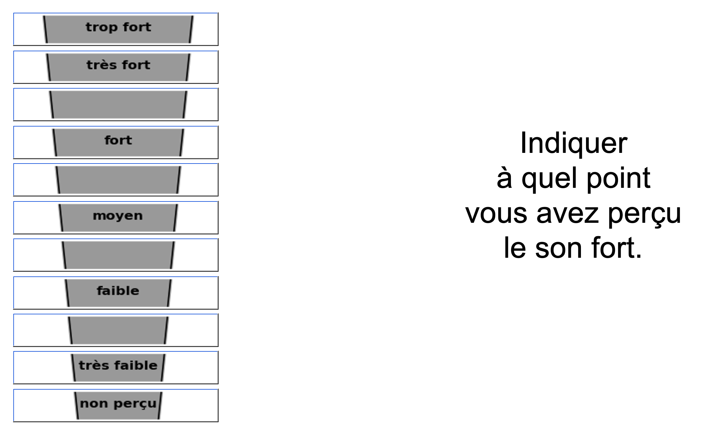

Audio examples and interactive demonstrations
Listen to and explore
the thesis experiments
This page accompanies the thesis with audio examples, task instructions, and illustrations from its three experimental parts.
Choose an experiment to go directly to its section.
Loudness and timbre
Explore the sounds used in the loudness and timbre experiments.
Explore this section → 02Attention in two sound streams
Discover the detection task and the distracting events.
Explore this section → 03Local-global processing
Listen to the pitch patterns and explore their structure.
Explore this section →Experimental part 01
Loudness and timbre
This section brings together two experiments investigating loudness and timbre perception. Explore the loudness experiment below, or jump to the timbre experiment.
Loudness experiment
In this experiment, listeners rated the perceived loudness of sounds presented at different levels. The response interface and the 14 seed sounds are provided below to illustrate the task and its stimuli.
Response interface
The screenshot below shows the interface used to collect participants’ loudness ratings.

Listen to the seed sounds
Listen to each of the 14 seed sounds using the players below. The labels B1–B6, R1–R6, and FX1–FX2 match those used in the thesis chapter.
B1
B2
B3
B4
B5
B6
R1
R2
R3
R4
R5
R6
FX1
FX2
Timbre experiment
This experiment investigated how listeners perceived differences in timbre between sounds.
Task instructions, audio examples, and illustrations will be added here.
Experimental part 02
Attention in two sound streams
This section will introduce the selective attention task: detecting targets in one sound stream while ignoring a second stream.
Task instructions, audio examples, and an interactive demonstration: press the space bar to respond, then view your score.
Experimental part 03
Local-global processing
This section will introduce the pitch patterns used to investigate the processing of local changes and global structure.
Task instructions and audio examples, with answers and spectrograms that can be revealed after listening.